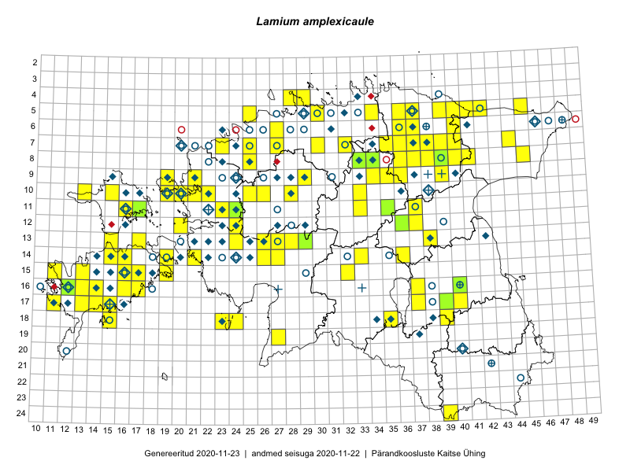

Lamium amplexicaule
Uuendatud: 2016-12-02
Kaardile koondatud taksonid: Lamium amplexicaule L.; Lamium amplexicaule var. amplexicaule

Kaart põhineb 136 kirjel, neist vaatlusi 132 ja eksemplare 4. Taksonit on leitud 96 ruudust.
Kuvatud viited 20 esimesele andmebaasikirjele, ülejäänud PlutoFis
- Peedu Saar, Timo Luhamäe: 2015-05-11: 12-36: ala
- Peedu Saar, Timo Luhamäe: 2015-05-12: 07-36: ala
- Peedu Saar, Timo Luhamäe: 2015-05-13: 06-40: ala
- Peedu Saar, Timo Luhamäe: 2015-05-13: 07-39: ala
- Toomas Kukk, Eerik Leibak: 2015-08-09: 13-15: ala
- Peedu Saar, Toomas Kukk: 2015-05-28: 11-17: ala
- Peedu Saar, Toomas Kukk: 2015-05-28: 11-17: GPS punkt
- Toomas Kukk, Thea Kull, Timo Luhamäe, Ott Luuk, Peedu Saar: 2015-06-28: 13-26: ala
- Ott Luuk, Peedu Saar: 2015-07-27: 11-35: ala
- Ott Luuk, Toomas Kukk, Thea Kull, Peedu Saar, Timo Luhamäe: 2015-06-25: 11-24: ala
- Peedu Saar, Liina Oja: 2015-06-08: 10-33: ala
- Peedu Saar, Liina Oja: 2015-07-22: 08-45: ala
- Toomas Kukk: 2015-06-19: 06-27: ala
- Tiit Hallikma, Indrek Tammekänd, Toomas Kukk: 2015-06-08: 14-26: ala
- Tiit Hallikma, Indrek Tammekänd, Toomas Kukk: 2015-06-08: 14-26: GPS punkt
- Ott Luuk: 2015-06-25: 10-28: GPS punkt
- Thea Kull, Hannes Pehlak: 2015-05-11: 09-34: ala
- Ott Luuk, Meeli Mesipuu: 2015-07-20: 08-41: ala
- Thea Kull, Peedu Saar: 2015-06-19: 17-40: ala
- Ott Luuk, Hannes Pehlak: 2015-06-08: 11-33: ala